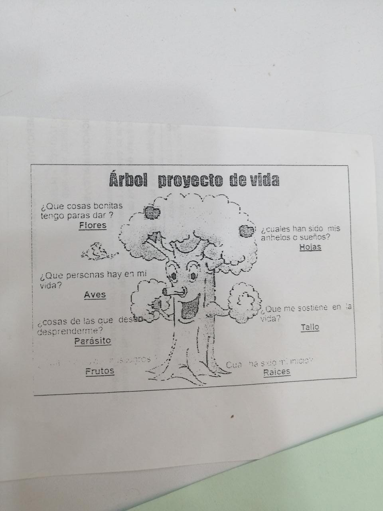
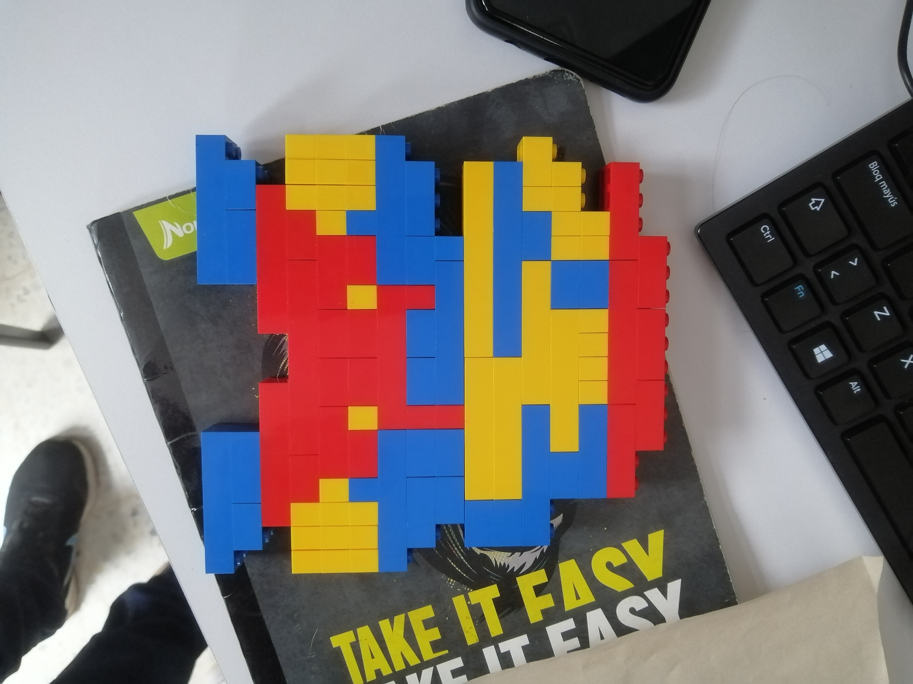

INDUCCIÓN
La inducción me pareció un buen método de aprendizaje ya que no se enfocaba sola mente
en realizar trabajos si no también en integrarnos con nuestros compañeros,
A medida que íbamos realizando las actividades nos íbamos conociendo más tanto entre compañeros como con instructores.
Realizamos unas cuantas actividades una de ellas consistía
en dibujar un árbol dando a conocer nuestro proyecto de vida.

también realizamos una actividad grupal con la cual estaba dirigida por los aprendices de talento humano,
una de las actividades consistía en armar un Mario Bros con fichas plásticas.
